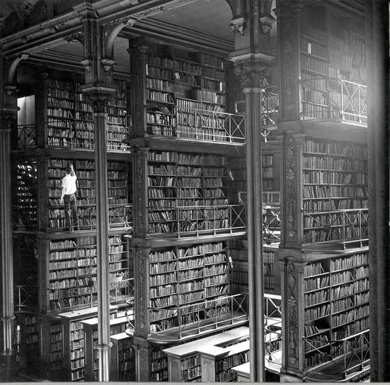

Tuesday, June the 18th, 2013
back to: title, date or indexes
An exceedingly rare snap of august Dobsonist Aloysius Nestingbird trying to locate a particular title among the crammed shelves of the out of print pamphleteer's teeming archive.

Or possibly the old Cincinnati Library.